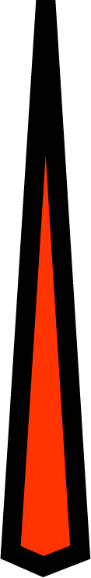

Function Generator
Amplitude (Message signal)

Frequency (Message signal)
Frequency
(Pulse signal)
Instruction
1- Turn on the function generator using the switch
2- Select the Amplitude of Message Signal from range of 1 to 20.
3- Select the Frequency(in Hz) of Message Signal in range of 1 to 10.
4- Select the frequency(in Hz) of Pulse signal, and frequency of pulse signal should be at least twice of message signal.
5- Click on add to table and then run the simulator.
6- To get reconstruct the signal click on demodulate button shown below.
7- Observe the Sampling or PAM signal and save in jpeg, png, pdf format.